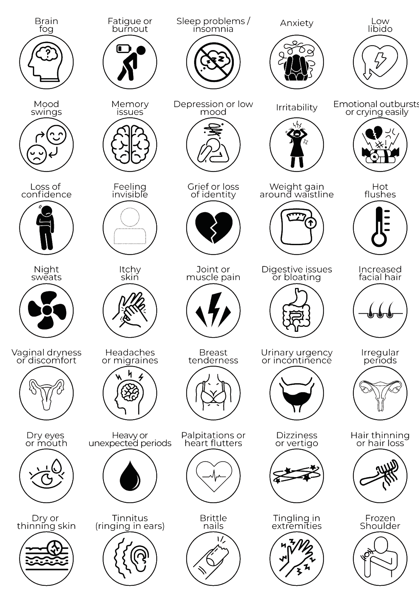

First, the good news. You are not imagining it, and you are not losing it. You are catching this early, and that changes everything.
You landed on "Just Noticing," which means something is shifting but a lot still feels normal. This is the very start, that bit where things feel a little off and nobody has handed you a map. Here is the good news. Knowing what is coming is the single biggest thing that takes the fear out of it, so you walk in with your eyes open instead of being ambushed at 3am wondering what is wrong with you. So let's keep it simple. Three things, done gently.
You don't need anything fancy, just a note on your phone. Jot your sleep, your mood and your cycle for a month and you'll start to see your own patterns. Spotting them early is how you stay a step ahead instead of being caught out, and it's gold to take to your GP down the track.
Sleep is usually the first thing to wobble, and it's the fastest win when you look after it. Guard the hour before bed, keep your room cool and dark, and treat rest as non-negotiable rather than a reward you have to earn. Almost everything else feels more manageable when you're actually sleeping.
Perimenopause. Say it to one person who has your back. Naming it early takes away half its power, and it means you're not quietly carrying something on your own. You'll be surprised how fast "me too" comes back at you.
The drop in oestrogen doesn't just cause the symptoms you feel today. It quietly changes your risk for the years ahead, which is exactly why this conversation matters now, not later.
This is the symptom tracker straight from the Hot, Foggy & Fabulous journal. Colour or tick every one that's showing up for you right now, even the ones that seem completely unrelated.

Here's what nobody warns you about. If you're on the younger side, or you just don't fit the tidy late-40s picture, some GPs will wave you away with "you're too young for that." Tracking is how you make it undeniable. Start logging now and walk back in a month later with evidence, not a feeling they can brush off.
| Symptom | Wk 1 | Wk 2 | Wk 3 | Wk 4 |
|---|---|---|---|---|
| Mind and mood | ||||
| Brain fog | ||||
| Fatigue or burnout | ||||
| Sleep problems | ||||
| Anxiety | ||||
| Mood swings | ||||
| Memory issues | ||||
| Irritability | ||||
| Body | ||||
| Hot flushes | ||||
| Night sweats | ||||
| Joint or muscle pain | ||||
| Headaches or migraines | ||||
| Cycle | ||||
| Irregular or changing periods | ||||
| Your own, add anything else you notice | ||||
The women who get through this stage best aren't the ones with the perfect routine. They're the ones who stop feeling alone in it. If the hardest part for you is that nobody around you seems to understand, that's the part I'd most love to help with.
One evening, online. We say the quiet parts out loud, have a proper laugh about the ridiculous bits, and you leave actually understanding what's happening and what helps. Just $37.
Save my spot